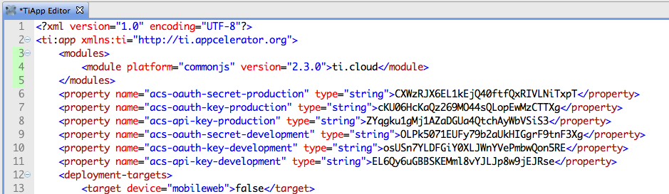
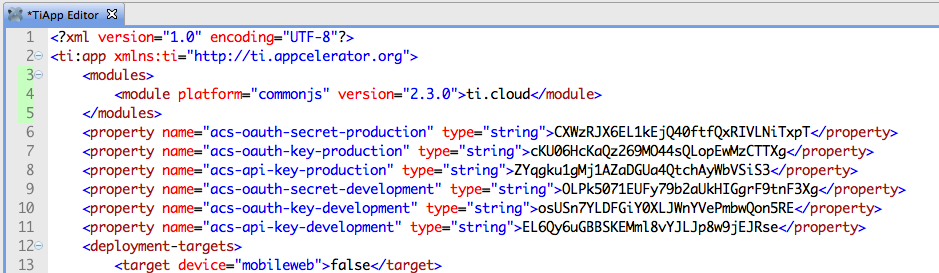
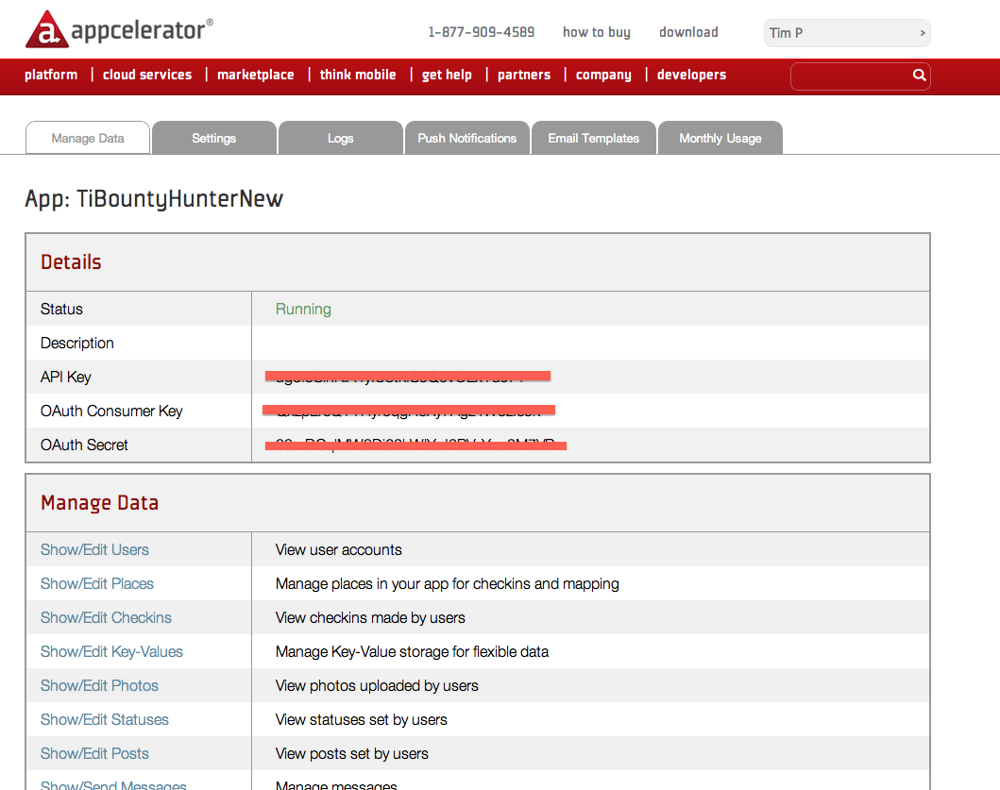

Appcelerator Cloud Services
Titanium Certified Developer (TCD) Training
In this lesson, you will:
- Explore the features and use-cases for ACS
- Enable ACS support in an app and implement ACS APIs
- Explore the features and use-cases for Node.ACS
 Topic
Topic
ACS Features
What is ACS?
- A pre-built Web backend for your apps
- Features 20+ pre-built APIs with easy Titanium integration
- Reliable & scaleable cloud-based solution
- SDKs available for Titanium, Objective C, Java/Android, and REST
- Node.ACS enables custom server-side functionality via Node.js
APIs

ACS vs. DIY
- It's pre-built so you don't have to
- No IT Team Required
- Scalable
- Cost Scales as Use Scales
ACS Cost
http://www.appcelerator.com/plans-pricing/
Topic
Using ACS
Enabling ACS
- Register your App
- Instantiate the ACS library
- Implement the ACS APIs
Register your app

Registration results
 

Instantiate ACS
var Cloud = require('ti.cloud');
Cloud.debug = false;
// set debug=true to see additional logging messages in the console
Implement the ACS APIs
var login = function(username, password, callback) {
Cloud.Users.login({
login: username,
password: password
}, function (e) {
if (e.success) {
currentUser = e.users[0];
loggedIn = true;
callback(loggedIn);
} else {
Ti.API.info('Error: ' + ((e.error && e.message) || JSON.stringify(e)));
loggedIn = false;
currentUser = null;
callback(loggedIn);
}
});
};
Login Required
- (Almost) all ACS interactions must be done by logged in user
- Option 1: manually create ACS user & hard-code login in your app
- Option 2: prompt user to create account and log in
- By default, user sessions not preserved
Persisting User Session
// In your createUser() type function, set
// Ti.App.Properties.setString('sessionid', Cloud.sessionId);
// when your app starts, restore the session
var Cloud = require('ti.cloud'),
sid = Ti.App.Properties.getString('sessionid'),
currentUser = null;
if(sid) {
Cloud.sessionId = sid; // ← this is the critical piece
var me = Cloud.Users.showMe(function(e) {
// extra: store local reference to user object
currentUser = e.users[0];
});
}
ACS in Alloy
- Community contributed solution currently
- See https://github.com/aaronksaunders/ci.alloy.acs.books
exports.definition = {
config : {
"columns" : {
"active" : "boolean"
},
"defaults" : {},
"adapter" : {
"type" : "acs",
"collection_name" : "books",
"custom" : true
},
...
Management
Visit my.appcelerator.com to manage your apps.

Analytics
- Log onto your my.appcelerator.com page
- Right-click Resources, choose View Analytics
- Visit http://analytics.appcelerator.net/#app=YOUR_APP_GUID
ACS Docs
- http://cloud.appcelerator.com/docs/quickstart
- http://cloud.appcelerator.com/docs/docmenu_info
- http://docs.appcelerator.com/titanium/latest/#!/api/Titanium.Cloud
ACS Kitchen Sink
 Example application provided with SDK
Example application provided with SDK
Installed to SDK directory
Not a full project; copy files to new project
Topic
Node.ACS
What is Node.ACS?
- A Node.js application running the the ACS cloud
- Has access to the same ACS APIs as your app
- Can manipulate your app's data
Node.ACS Use-cases
- Extend the existing ACS APIs
- Aggregate or proxy data for your mobile app clients
- Host a new or existing node.js app in the cloud
- Develop a Node.js backend service for your Ti apps
Node.ACS Development
- Install locally via
npm - Develop using local instance
- Push to ACS cloud to publish
- Of course, written in Node.js (JavaScript)
Node.ACS Docs
Summary
In this lesson, you:
- Explored the features and use-cases for ACS
- Enabled ACS support in an app and implement ACS APIs
- Explored the features and use-cases for Node.ACS
Q&A
Lab Objectives
In this lab, you will:
- Start with partially-written app
- Add in the 'create user' ACS code
- Store captured fugitive data in ACS as custom objects
- Capture a fugitive and view the data in your ACS dashboard
Lab: wiki.appcelerator.org/display/td/11.+Storing+data+in+ACS
Solution Walkthrough